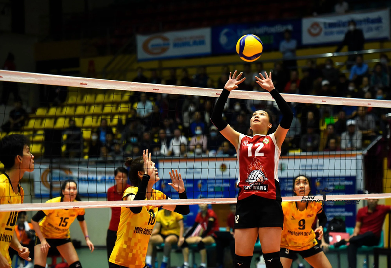

Thứ 4, 8/11/2023, 3:15
Bóng chuyền là 1 môn thể thao Olympic, trong đó 2 đội được tách ra bởi 1 tấm lưới. Mỗi đội cố gắng ghi điểm bằng cách đưa được trái bóng chạm phần sân đối phương theo đúng luật quy định.
Bộ luật hoàn chỉnh khá rộng. Nhưng sơ lược, cách chơi như sau: Vận động viên ở 1 đội bắt đầu lượt đánh bằng cách phát bóng (thảy hoặc thả trái bóng và đánh bằng bàn tay hoặc cánh tay), từ ngoài đường biên cuối sân, qua lưới, và sang phần sân của đội nhận bóng. Đội nhận bóng không được để bóng chạm mặt đất bên phần sân đội mình. Họ được phép chạm bóng tối đa 3 lần. Thông thường, 2 lần chạm đầu tiên được dùng để chuẩn bị cho đội tấn công, đội cố gắng trả trái bóng qua lưới sao cho đội bên kia không thể chặn trái để không chạm mặt đất phần sân đội mình.
Lượt bóng tiếp tục, với mỗi đội được phép chạm bóng nhiều nhất 3 lần liên tục, đến khi một trong 2 điều xảy ra (1): đội thắng lượt bóng, làm cho trái bóng chạm được mặt đất phần sân đối phương; hay (2): đội phạm lỗi và thua lượt banh. Đội thắng lượt bóng ghi được 1 điểm, và được phép giao banh ở lượt tiếp theo. Một vài lỗi phổ thông thường phạm phải là:
Trái bóng thường được chơi bằng bàn tay hoặc cánh tay, nhưng người chơi được phép đập hoặc đẩy (chạm bóng trong thời gian ngắn) bằng bất kì bộ phận nào trên cơ thể.
Có khá nhiều kĩ thuật chơi trong bóng chuyền, bao gồm "spiking" (đập bóng) và "blocking" (chắn bóng) (bởi vì những ký thuật chơi đó được thực hiện bên trên lưới nhảy thẳng đứng là một trong những kĩ năng được chú trọng trong thể thao) cũng như "passing" (bắt bước 1), "setting" (chuyền 2), và các vị trí chơi đặc thù và cấu trúc chơi phòng thủ và tấn công.
Vào ngày 9 tháng 2 năm 1895 ở Holyoke, Massachusetts, Hoa Kỳ, William G.Morgan, một giáo viên môn giáo dục thể chất YMCA, đã tạo nên một môn thể thao mới gọi là "Mintonette". Môn này được xem là một trò giải trí được khuyên chơi trong nhà và với số lượng người chơi không bị hạn chế. Mintonette đã lấy một số đặc trưng của nó từ môn tennis và bóng ném. Một môn thể thao trong nhà khác, bóng rổ, cũng được tạo ra và chỉ cách nơi đây 10 dặm (16 kilomet), ở thành phố Springfield, Massachusetts chỉ 4 năm về trước. Mintonette đã được thiết kế để trở thành một môn thể thao trong nhà ít thô bạo hơn so với bóng rổ và dành cho các thành viên cũ của YMCA, trong khi vẫn cần một chút nỗ lực thể thao. Những luật đầu tiên, được viết bởi William G Morgan, đòi hỏi một cái lưới cao 6 ft 6 in (1.98 m), một sân 25×50 ft (7.62×15.24 m), và không giới hạn người chơi. Trận đấu bao gồm 9 lượt với 3 lượt giao banh cho mỗi đội ở mỗi lượt, và không giới hạn số lần chạm banh cho mỗi đội trước khi đưa banh qua phần sân đối phương. Khi phát banh lỗi, đội sẽ còn thêm một lần phát banh. Đánh banh không qua lưới được xem là phạm lỗi (tương tự với phát ra ngoài)—trừ phi đó là lần phát bóng đầu tiên.
Sau một lần quan sát, Alfred Halstead, chú ý tính "volleying nature" của trò chơi trong trận thể thao biểu diễn đầu tiên vào năm 1896, tại trường quốc tế đào tạo YMCA (hiện giờ gọi là Springfield College), trò chơi nhanh chóng được biết đến với tên "volleyball" (bóng chuyền) (ban đầu được phát âm thành hai tiếng: "volley ball"). Luật của bóng chuyền được xây dựng sơ lược bởi trường quốc tế đào tạo YMCA và trò chơi phát triển rộng ra ở nhiều YMCA khác.
Quả bóng đầu tiên được sử dụng hiện vẫn còn đang tranh cãi; một vài nguồn dẫn nói rằng Spalding đã tạo ra quả bóng đầu tiên vào năm 1896, trong khi các nguồn khác nói rằng nó được tạo ra vào năm 1900. Các luật chơi phát triển dần theo thời gian: ở Philippines vào năm 1916, kĩ năng và sức mạnh của chuyền 2 và đập banh đã được xây dựng, và 4 năm sau luật "3 chạm" và luật cấm phát banh từ hàng phía sau được phát triển. Vào năm 1917, trò chơi chuyển từ 21 sang 15 điểm. Vào năm 1919, khoảng 16 000 quả bóng chuyền được sản xuất bởi American Expeditionary Force cho quân đội của họ và Những quốc gia thuộc khối Đồng Minh, điều đa góp phần phát triển bóng chuyền ở các nước mới.
Quốc gia đầu tiên ngoài Mỹ công nhận bóng chuyền là 1 môn thể thao là Canada vào năm 1900. Hiệp hội quốc tế, Fédération Internationale de Volleyball (FIVB), được thành lập vào năm 1947, và Giải vô địch Quốc tế đầu tiên được tổ chức vào năm 1949 dành cho nam và năm 1952 dành cho nữ. Môn thể thao này giờ trở nên phổ biến tại Brasil, châu Âu (nơi mà đặc biệt là Ý, Hà Lan, và các nước Đông Âu hiện là cường quốc trong môn thể thao này từ thập niên 1980), ở Nga, và một vài nước khác gồm Trung Quốc và phần lớn các quốc gia ở châu Á, cũng như ở Mỹ.
Bóng chuyền bãi biển, phiên bản khác chơi trên cát của bóng chuyền với chỉ 2 người mỗi bên, được chấp nhận bởi FIVB để trở thành 1 môn thể thao vào năm 1987 và thêm vào các môn thể thao trong chương trình Olympic vào Thế vận hội Mùa hè 1996. Bóng chuyền còn là một môn thể thao trong Paralympics tổ chức bởi World Organization Volleyball for Disabled (Hiệp hội bóng chuyền cho người tàn tật).
Lịch sử của bóng chuyền Olympic đánh dấu từ Thế vận hội Mùa hè 1924 tại Paris, nơi mà bóng chuyền được như một phần mô tả sự kiện thể thao của châu Mỹ. Sau khi sự thành lập của FIVB và một số hiệp hội châu lục, bóng chuyền bắt đầu được đề nghị để trở một môn thể thao chính thức. Vào năm 1957, một giải đấu đặc biệt được tổ chức tại kì họp IOC lần thứ 53 ở Sofia, Bulgaria để ủng hộ cho đề nghị này. Cuối cùng yêu cầu này cũng được chấp thuận, và bóng chuyền chính thức trở thành môn thể thao nằm trong chương trình thi đấu tại Thế vận hội Mùa hè 1964.
Giải đấu bóng chuyền Olympic ban đầu chỉ là một giải đấu bình thường: tất cả các đội thi đấu với các đội còn lại và được xếp hạng theo tỉ lệ chiến thắng, trung bình set, và trung bình điểm. Một điểm bất cập của hệ thống giải đấu vòng tròn tính điểm là những đội chiến thắng có thể được dự đoán từ trước khi giải đấu kết thúc, điều này làm cho khán giả mất đi sự hứng thú đối với kết quả của các trận đấu còn lại. Để đối phó với trình huống này, giải đấu được chia ra làm 2 nhóm cùng với một vòng đấu cuối cùng loại bỏ các giải đấu bao gồm cá trận tứ kết, bán kết và chung kết vào năm 1972. Con số các đội tham gia giải đấu Olympic tăng dần qua các năm từ 1964. Từ 1996, các sự kiện cho cả nam lẫn nữ có đến 12 quốc gia thi đấu. Mỗi liên đoàn bóng chuyền châu lục đều có ít nhất một hiệp hội của một quốc gia nằm trong Olympic.
Liên Xô từng giành được huy chương vàng nam bóng chuyền vào năm 1964 và 1968. Sau khi giành huy chương đồng vào năm 1964 và bạc vào năm 1968, Nhật cuối cùng cũng có được tấm huy chương vàng bóng chuyền nam vào năm 1972. Huy chương vàng nữ thuộc về Nhật vào năm 1964 và 1976. Năm đó, sự ra đời của kĩ năng phòng thủ mới, tấn công sau hàng chắn, đã giúp Ba Lan vượt qua Liên Xô sau 5 set đấu sít sao. Từ lúc đội bóng chuyền nam mạnh nhất lúc bấy giờ thuộc về khối Đông Âu, việc tẩy chay sự dẫn đầu của Mĩ tại Thế vận hội Mùa hè 1980 đã không có nhiều ảnh hưởng đến môn bóng chuyền nam như ở bóng chuyền nữ. Liên Xô sưu tầm huy chương vàng ở môn bóng chuyền nam thứ ba của họ với chiến thắng 3-1 trước Bun-ga-ri (đội bóng chuyền nữ của họ cũng có được tấm huy chương vàng thứ 3). Với việc tẩy chay Liên Xô ở Thế vận hội Mùa hè 1984 tại Los Angeles, đội Mĩ đã vượt qua Brazil trong trận chung kết để dành tấm huy chương vàng. Ý giành được chiếc huy chương đầu tiên (huy chương đồng nam) vào năm 1984, báo hiệu cho sự phát triển vượt bậc trong bóng chuyền Ý.
Tại Thế vận hội Mùa hè 1988, Karch Kiraly và Steve Timmons đưa đội tuyển Mĩ đến với tấm huy chương vàng thứ 2 liên tiếp của họ. Vào năm 1992, việc đánh giá thấp Brazil đã khiến các đội được yêu thích như C.I.S., Hà Lan và Ý gây thất vọng trước cơ hội giành được tấm huy chương vàng Thế vận hội đầu tiên của họ. Đội á quân Hà Lan, huy chương bạc năm 1992, trở lại dưới sự dẫn dắt của Ron Zwerver và Olof van der Meulen để giành chức vô địch vào năm 1996 sau chiến thắng 5 set trước Ý. Huy chương đồng nam năm 1996, Serbia và Montenegro (tham gia khi còn là Liên bang Nam Tư vào năm 1996 và 2000) đánh bại Nga trong trận chung kết vào năm 2000, giành tấm huy chương vàng đầu tiên của họ. Vào năm 2004, Brazil chiến thắng đội á quân Ý trong trận chung kết. Vào Thế vận hội Mùa hè 2008, đội tuyển Mĩ đã đánh bại Brazil trong trận chung kết môn bóng chuyền nam.
Bóng chuyền được chơi trên sân:
- Chiều dài: 18m (59 feet)
- Chiều rộng: 9m (29.5 feet)
Sân được chia thành hai nửa 9m × 9m bởi một lưới đặt giữa sân.
Kích thước lưới:
- Rộng: 1m (40-inch)
- Dài: 9,5-10m
- Mép trên cao: 2,43m (7 feet 11 5/8 inches) đối với nam và 2,24m (7 feet 4 1/8 inches) đối với nữ
Lưu ý: chiều cao này có thể thay đổi đối với từng giải đấu chuyên nghiệp và nghiệp dư.
Có một vạch song song và cách lưới 3m trên phần sân của mỗi đội, được xem là "vạch tấn công". Vạch "3m" (hoặc 10 foot) này chia phần sân mỗi đội thành "hàng trước" và "hàng sau" (cũng có thể gọi là sân trước và sân sau). Lần lượt ta có 3 khu vực: được đánh số như dưới đây, bắt đầu từ khu "1", là vị trí của người giao bóng.
Sau khi giành được quyền giao bóng (còn được gọi là siding out), các thành viên của đội phải di chuyển theo chiều kim đồng hồ, với người chơi lúc trước ở vị trí "2" di chuyển tới vị trí "1" và lần lượt như vậy, người chơi ở vị trí "1" di chuyển tới vị trí "6".
Sân được bao quanh bởi một diện tích gọi là vùng tự do, rộng ít nhất là 3m và là nơi người chơi có thể vào và đánh bóng sau khi phát bóng. Mọi vạch thể hiện đường biên của sân và vùng tấn công được vẽ hoặc sơn trong phạm vi kích thước của sân. Nếu bóng chạm vào vạch thì được xem như là ở trong. Có một cọc nhỏ đặt tại nơi trực giao của lưới và đường biên và được xem là đường biên đứng. Bóng chỉ thực sự qua lưới nếu vượt được qua giữa hai cọc này (hay đường kéo dài vuông góc của nó tới trần nhà) mà không chạm vào chúng.
Tuyệt vời! Bài viết rất hay và hấp dẫn. Tôi là một fan hâm mộ của môn thể thao này và tôi rất thích những thông tin mà tác giả đã chia sẻ. Tôi đặc biệt thích phần phân tích về chiến thuật của đội tuyển Việt Nam. Nó rất chi tiết và hữu ích. 🐧🐧🐧
Tôi nghĩ tác giả có thể sử dụng thêm các hình ảnh và video để bài viết thêm sinh động và dễ hiểu hơn.🐧🐧🐧
Bài viết rất lôi cuốn và hấp dẫn. Tôi đã phải ngừng đọc vài lần để bình tĩnh lại vì quá phấn khích. Tôi nghĩ đây là một trong những bài viết hay nhất về môn thể thao này mà tôi từng đọc.🐧🐧🐧
{kind=link}
{kind=link}
{kind=link}
{kind=link}
Thêm bình luận